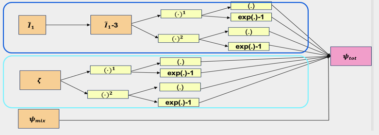
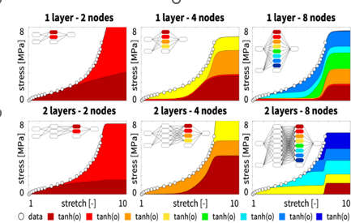
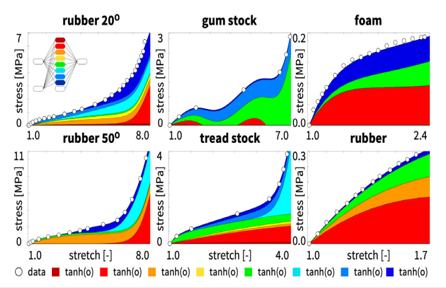
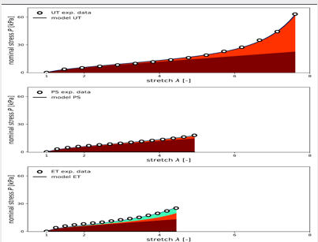
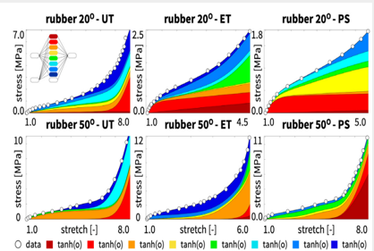
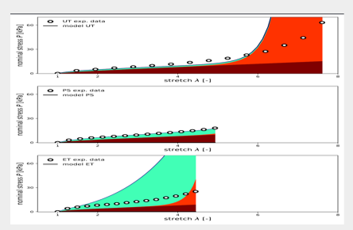
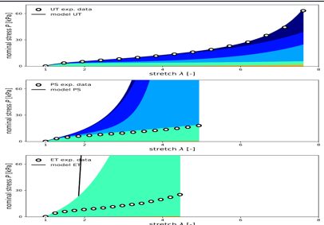

Why Study Polymer Degradation?
Plastic waste in aquatic environments gradually breaks down into microplastics (Figure 1), which enter food chains, contaminate water systems, and ultimately accumulate inside the human body (Figure 2), posing long-term health risks.
Yet polymers are not inherently harmful. When engineered to degrade purposefully like hydrogels they become powerful tools in biomedical applications such as tissue engineering, drug delivery, wound healing, and biosensing (Figure 3).
Understanding and modeling how polymers degrade is critical for both mitigating environmental harm and advancing life-saving technologies. But predicting exactly how and when polymer networks break down is incredibly complex: degradation is tightly coupled with mechanics, swelling, transport, and time-dependent behavior. To tackle this challenge in a systematic way, we turn to continuum mechanics and physics-informed machine learning.


.png)
Diffusion–Deformation–Degradation

Inelastic Deformation (Fi)
Water molecules enter the polymer network, causing it to swell. At the same time, short polymer chains formed by hydrolysis detach from the network and diffuse outward. This coupled solvent uptake and chain scission changes both the volume and internal microstructure of the material and represents the inelastic part of the deformation.
Elastic Deformation (Fe)
From this swollen intermediate configuration, the polymer network undergoes elastic stretching or compression to reach the current configuration. The total response is therefore composed of diffusion-driven inelastic changes followed by elastic loading, capturing the full diffusion–deformation–degradation process characteristic of hydrogels.
Methods: MiCANN Architecture
Motivation & Background
Classical fully connected neural networks can interpolate rubber elasticity data, but their weights and nodes do not map to known constitutive terms. They often fail to extrapolate beyond the training range and may produce non-physical stress–stretch responses.
Constitutive Artificial Neural Networks (CANNs) embed physical structure, allowing learned parameters to correlate with established models and yielding interpretable mechanics. For degrading hydrogels, we additionally require a framework that respects irreversibility, non-negative dissipation, and stiffness loss over time—motivating the development of MiCANN.
Learning the Helmholtz Free Energy
- MiCANN represents the Helmholtz free energy ψ with a neural network constrained to be objective and polyconvex.
- ψ is zero at zero strain, smooth/differentiable, monotonically increasing with deformation, and unbounded at large stretch.
- Standard activations (step, ReLU, tanh/sigmoid) are replaced with non-negative, convex, unbounded activations that guarantee thermodynamic and mechanical consistency.
Degradation & Dissipation Module
- A convex, physics-informed degradation network predicts the next degradation state ζn+1 from the current state and driving forces.
- Convex, non-decreasing activations and non-negative weights enforce a non-negative dual dissipation potential π* and irreversible degradation (˙ζ ≥ 0).
- This design keeps predictions smooth and stable even when experimental data are sparse.
MiCANN Network Architecture
Results
Classical Neural Networks vs. MiCANN (Single-Mode)
Classical fully connected neural networks can fit stress–stretch data extremely well within the training window, regardless of depth or width. As shown in Figure 4, even the smallest network with a single hidden layer and two nodes interpolates the uniaxial tension curve almost perfectly. Deeper or wider architectures further reduce the training error. However, this accuracy is strictly limited to the domain 1 ≤ λ ≤ 8 covered by the experimental data.
Classical networks struggle when data are sparse. Figure 5 shows a fully connected network trained on multiple uniaxial datasets (rubber at 20°C and 50°C, gum stock, tread stock, foam, and rubber). While interpolation within dense regions is accurate, the gum-stock dataset with only seven samples exhibits pronounced oscillations in the stress–stretch curve. These nonphysical oscillations arise from negative output-layer weights that destroy convexity and create spurious non-monotone behavior.
MiCANN, in contrast, learns a free-energy representation that generates smooth, monotone stress–stretch curves across loading modes. Figure 6 shows MiCANN predictions for uniaxial tension (UT), pure shear (PS), and equibiaxial tension (ET) along with individual free-energy contributions.
Multi-Mode Training and Physical Interpretability
Classical networks can also fit multi-mode data accurately but offer no physical interpretability. As shown in Figure 7, a feed-forward network trained separately on UT, ET, and PS for rubber at 20°C and 50°C reproduces the data with nearly zero training error, yet all nodes and weights in the final layer remain active and lack clear mechanical meaning.
When MiCANN is trained simultaneously on multiple loading modes, it infers a single, unified constitutive model. Figure 8 provides an alternative visualization of MiCANN UT/PS/ET predictions, again highlighting smooth, convex, and thermodynamically admissible responses.
For sufficiently rich and diverse datasets, MiCANN converges robustly independent of initialization to the same set of free-energy parameters and degradation kinetics. Figure 9 shows MiCANN predictions across temperatures and loading modes, demonstrating that the architecture yields a single, unified model that generalizes across conditions while remaining thermodynamically consistent.
Overall: Classical networks memorize the training regime and often fail under extrapolation or sparse sampling, whereas MiCANN learns a unified, mechanistically meaningful constitutive model that respects continuum mechanics and thermodynamics.
Project done by
Kalkidan Gebru
Ph.D. Student · Aerospace Engineering · University of Michigan